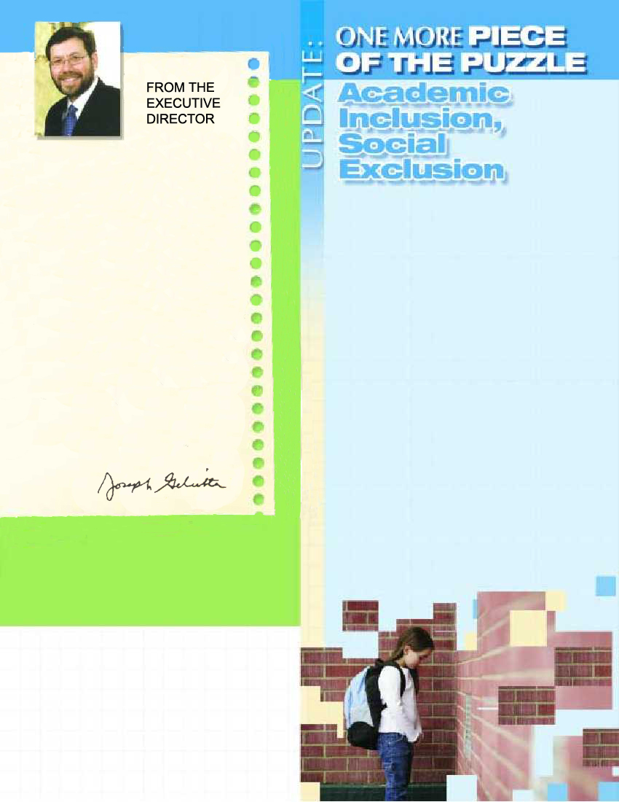

In the early grades,
autistic children make friends and
join them
in almost all activities. However,
because autistic students
lack the social skills of
their peers, their social
inadequacy becomes more
obvious each year. Not only do
autistic children fall behind,
but their maturing peer group
slowly becomes more aware
of their differences. This may
lead to teasing, bullying,
or just generally making him an
outcaste. The same child who played
tag with his friends in first
grade can now be found in the corner of the yard, alone and
miserable. Social
deficits and communication problems are part
of the clinical
diagnosis of autism. Autistic children tend
to have difficulties
maintaining an ongoing conversation,
showing feelings,
controlling the volume of their voice, and respecting personal
space boundaries. They tend to be very literal and to overreact.
As they advance from grade
to grade, autistic children’s
social skills advance minimally, rapidly increasing
the gap between them and their peers.
However, it is possible to teach autistic
children social skills, such
as appropriate responses and recognition of social cues.
Social skills training
is becoming a new objective
in the treatment
of autism. Although not a cure-all, it is helping more and
more autistic children integrate into the
public-school setting.
Behavioral Therapy for autistic children
has helped make it possible to integrate
thousands of autistic children into
regular public school classes.
2 (
New York Times, “As
Autistic Children Grow, So
Does Social Gap,” February 26, 2005)
Join us Sunday & Monday,
June 11&12, 2006 "NEW APPROACHES
TO ASSESSMENT &
TREATMENT OF AUTISM,
APD AND APROXIA"
presented by Martha Bums Ph.D., SLP.
Workshop will explore
the neurological foundations of attention, processing,
social skills and praxis; disturbances, current research &
treatment approaches of social skills
learning; auditory processing; & apraxia
of speech in children To
register and for more information, call
Cheyn Weinstein - 718-338-3838, ext.420.
Editor-in-Chief
Joseph Geliebter, Ph.D.
Managing Editor
Leah Schlager, MA, MBA
Assistant Editor
Cheyn Weinstein
Photo Editor
Benjamin Orlansky
Dr. Joseph Geliebter
Contributing Editors
Deborah Eisenberg, Ph.D., PT
Caryl-Robin Dresher, MA, CCC/SLP
Jane Adler,
MA/CI, CT, OIC:C Mordecai
Rokeach, MA Joanna
Santoli, LMSW Bonnie
Shams MA, OTR Contributing
Writer Mari LazarAs
always, our concern is children and
addressing their needs and improving
their lives. In reflecting on the events of
this past year that had the greatest
impact on children, clearly the natural disasters
come to mind. Earthquakes, a tsunami, and
several hurricanes wreaked havoc on the lives of
thousands of children and disrupted families. We
cannot prevent natural disasters, but we can
work on improving our prediction and
anticipation of these events and develop
appropriate plans to help mitigate the tragic
outcomes. However, a far more familiar and
prosaic "killer" already present and rising to
epidemic proportions, which can be prevented, is
obesity. And the obesity epidemic is already
affecting children and teenagers in our society.
In this issue we focus on some of the causes of
obesity and on interventions and solutions.
Hopefully,through education and our
professional interventions, we can improve the
lives and health of the children we serve.